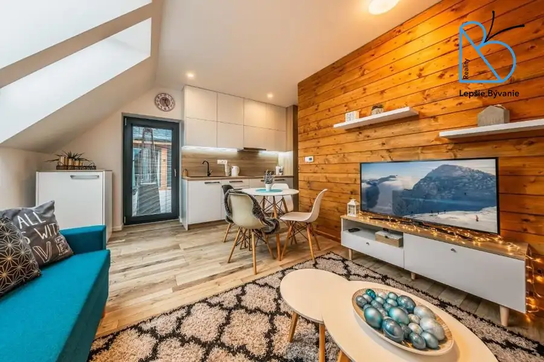
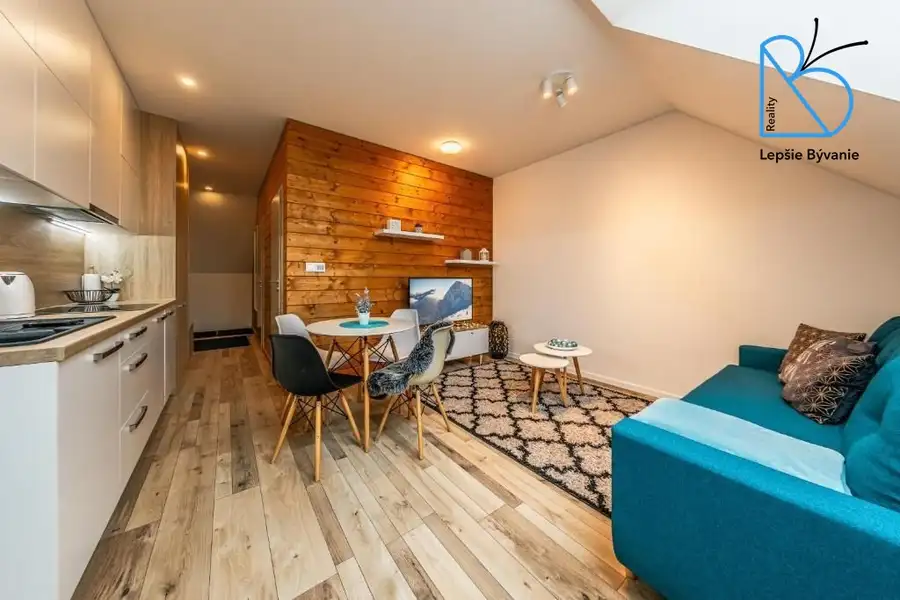
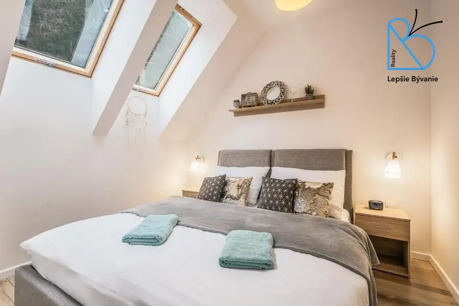
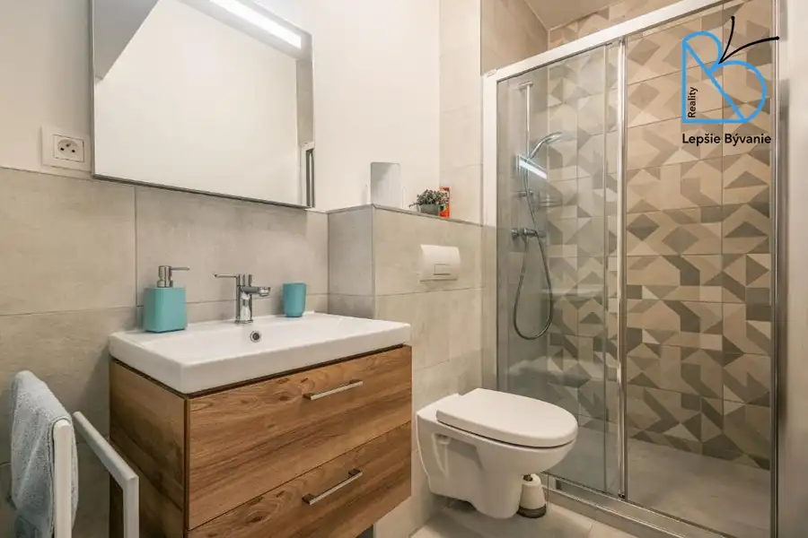
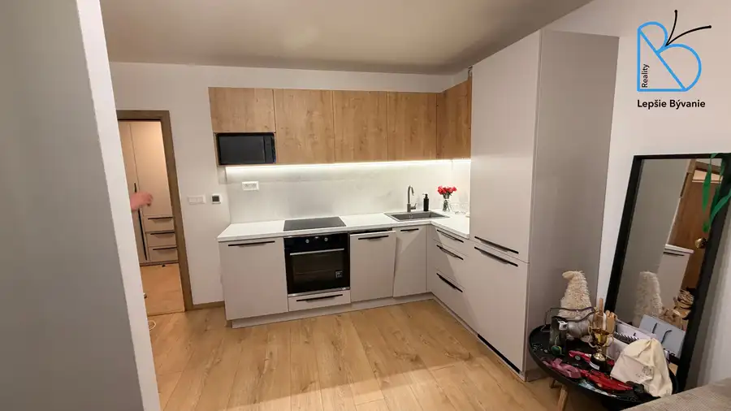
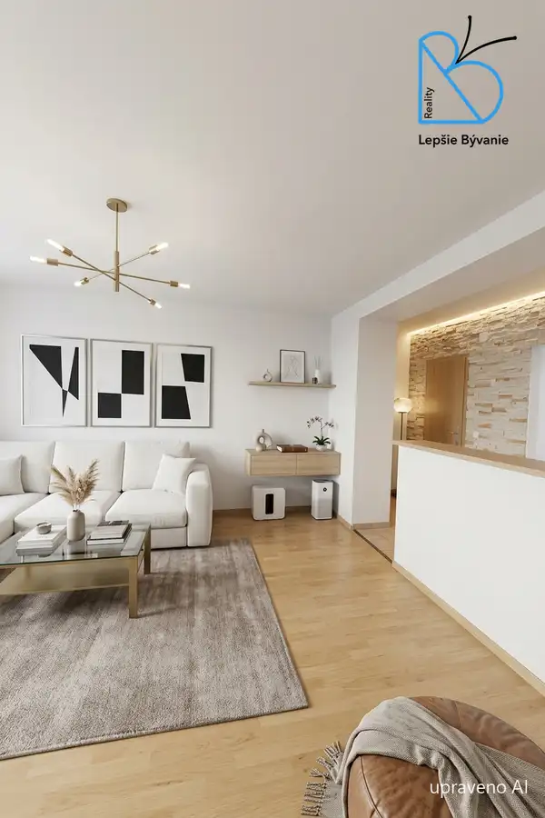
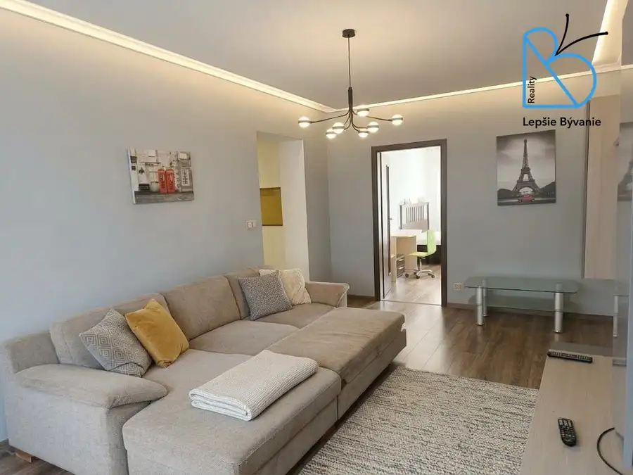

NA PREDAJ ZARIADENÝ APARTMÁN Demänovská dolina - Jasná
Demänovská Dolina




- Plocha50 m²
- StavKompletná rekonštrukcia
O nehnuteľnosti
Hľadáte hotový apartmán v Demänovskej doline, ktorý zarába a zároveň Vám poskytne dokonalý relax? Tento kompletne zariadený apartmán spája oboje, zarába a nemá žiadne viazanosti voči správcom. Vy rozhodujete, kedy v ňom bývate a kedy zarába! HLAVNĚ VÝHODY NEHNUTEĽNOSTI:Lokalita: Demänovská dolina – Jasná, Nízke Tatry SKI bus: Iba 50m od domu (1. zastávka = vždy si sadnete) Terasa: Podiel na veľkej terase s priamym výhľadom do lesa Bonusy: Vyhradené parkovacie miesto + pivnica na lyže/bicykle Okolie: Reštaurácie, ihrisko a príroda v pešej dostupnosti Apartmán sa nachádza na 2. poschodí a predáva sa s kompletným vybavením. Ideálna investícia alebo rekreačné bývanie. Kontaktujte nás pre viac informácií!Ing. Viera Štadániová - Lepšie bývanie0908 509 310stadaniova.v@gmail.com
Parametre
- Druh
- Iný rekreačný objekt
- Dátum zverejnenia
- 12. 06. 2026
- Energetický certifikát budovy
- nie je
- Plocha pozemku
- 0 m²
- Počet izieb / miestností
- 2
- Počet nadzemných podlaží
- 2
- Počet pivníc
- 1
- Počet vonkajších parkovacích miest
- 1
- Stav nehnuteľnosti
- Kompletná rekonštrukcia
- Terás
- 1
- Terén pozemku
- Rovinatý
- Typ
- Predaj
- Typ konštrukcie
- Zmiešaná
- Vybavenie
- Terasa, Pivnica, Vonkajšie parkovacie miesto
- Zastavaná plocha
- 50 m²
- Úžitková plocha
- 50 m²
Kde to je


Mohlo by Vás zaujímať

BytNové Cena na vyžádáníNa predaj 1 izb byt novostavba, Nitra - centrum Nitra 1-izbový41 m²6. podlažie
BytNové 142 000 €Predaj 3 izb byt s garážou + pozemok, Preseľany Preseľany 3-izbový65 m²1. podlažie
BytNové 165 000 €NA PREDAJ Kompletne rekonštruovaný a zariadený 2-izbový byt NITRA - CENTRUM Nitra 2-izbový59 m²2. podlažie